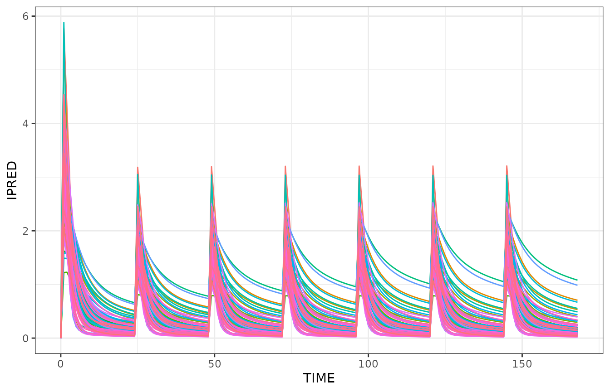
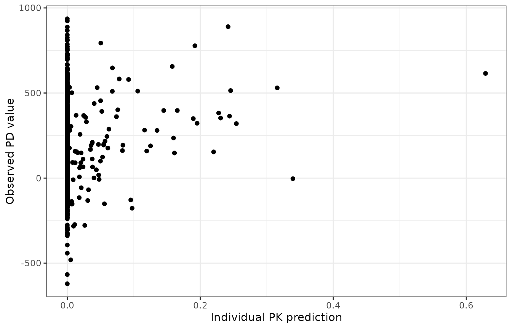

Simulate Known Subjects Using Emperical Bayes Estimates (Etas)
Philip Delff
September 11, 2026 using NMsim 0.2.8
Source:vignettes/NMsim-known.Rmd
NMsim-known.RmdObjectives
This vignettes aims at enabling you to use NMsim for the
following purposes
- Simualation of known subjects (estimated random effects),
Prerequisites
Simulation with known ETA values is only possible through NMsim’s internal Nonmem execution method. That means, we need to provide the path to the Nonmem executable.
NMdataConf(path.nonmem="/opt/NONMEM/nm75/run/nmfe75")More information on configuration and test of configuration at NMsim-config.html.
You should be familiar with basic NMsim arguments as
described in NMsim-intro.html.
That vignette mostly talks about the default simulation method (new
subjects). This vignette provides various examples on how the
NMsim_EBE simulation method can be used to simulate “known”
subjects. We shall explain in more detail what is meant by a “known
subject”. Briefly it means their ETAs are known. The most common example
of this is resimulation of subjects that were in the estimation data
set.
Simulation of known subjects
We sometimes want to simulate the observed subjects, i.e. the
subjects we included in the estimation data. We want to reuse the
estimated random effects (ETA’s) given the subject ID’s.
NMsim has a method for this called NMsim_EBE.
The restriction is that all subjects (values of ID) in the
simulation input data must have been used in the estimation input
data.
For NMsim_EBE to work, ID values in the
simulation data set must be identical to ID values used in
the estimation. For models estimated with FOCEI, the ETAs are stored in
the .phi file produced by Nonmem. This file must be
available, and NMsim will automatically use it if applicable.
For EM-based estimation methods such as SAEM or IMP, NMsim cannot use
the .phi file, and the user must have stored the ETAs in
output table files for the method to work. It does not matter where in
the table files they are, they just all need to be there. You can write
all of them like it is done in the example model provided with
NMsim called xgxr032.mod:
$TABLE ETAS(1:LAST) NOAPPEND NOPRINT FILE=xgxr032_etas.txtSo a “subject” essentially means a set of ETAs. Notice,
NMsim_EBE does nothing to restore covariates - you must
define covariates in input data as needed.
Simulate known subjects on a new dosing regimen and new sample schedule
The following code takes an already created simulation data set with
a single ID, and merges all other columns than ID onto the
observed IDs. That gives the same simulation data for all
subjects.
First thing, we decide on a model (an input control stream of an estimated model) to use for the example:
file.mod <- system.file("examples/nonmem/xgxr134.mod",package="NMsim")We generate a simulation data set with a loading dose (300 mg) followed by 6 doses (150 mg) every 24 hours. For smoothness plotted curves we use hourly sampling.
doses <- NMcreateDoses(TIME=c(0,24),AMT=c(300,150),ADDL=5,II=24,CMT=1)
## Now we add the sample records using `NMaddSamples()`.
dat.sim <- NMaddSamples(doses,TIME=0:(24*7),CMT=2)All the subjects to be simulated must be in the data set. In this
case we simulate all the subjects in the estimation data set. We read
the estimated output tables and merge with input data using
NMdata::NMscanData() to get those ID's. If you
prefer to get the ID's and their covariates in a different
way, that is fine. Just remeber, the ID’s must be the same
as in the estimation for NMsim to be able to find the eta’s for
simulation.
## read model results just to extract the observed ID's. Notice, if
## your model uses covariates, those should be retrieved too.
res.mod <- NMscanData(file.mod,quiet=TRUE)
ids <- unique(res.mod[,c("ID","WEIGHTB","AGE","MALEN")])
## Repeat the simulation data set for each ID and order accordingly
## we will merge with all the observed subjects in stead of the single
## ID in the original data set.
dat.sim$ID <- NULL
## the data.table way, repeating the data set for all the subjects
dat.sim.known <- as.data.table(dat.sim)[,ids,by=dat.sim]
## or, an outer join using NMdata::egdt
dat.sim.known <- egdt(ids,
dat.sim
)
## or an outer join using dplyr (code missing)
## order data set
setorder(dat.sim.known,ID,TIME,EVID)
## check data
NMcheckData(dat.sim.known,type.data="sim")
simres.known <- NMsim(file.mod=file.mod,
data=dat.sim.known,
method.sim=NMsim_EBE,
table.vars="PRED IPRED CL V2 KA",
name.sim="known1"
)And the simulation results are plotted for each subject.
ggplot(subset(simres.known,EVID==2),aes(TIME,IPRED,colour=factor(ID)))+
geom_line()+
theme(legend.position="none")
Individual dosing history, sample times or both
Individual simulations are useful for several purposes. Examples
Reuse individual dosing history and use a new common sample scheme. This could be for homogeneous evaluation of exposure metrics such as Cmax, AUC, or just to show concentration-time profiles at identical sampling times based on a model estimated on data with heterogeneos sampling. Currently, there is no example of this in this vignette but see the other examples, and it should be pretty clear how to do this.
Reuse dosing history and use individual sampling scheme from a different data set, e.g. PD.
Simulate a new common dosing and sampling scheme to simulate already observed subjects on a new regimen. This is sometimes done if for one reason or the other the model is not considered reliable for simulation of new subjects but the individual parameter estimates are trusted.
Reuse a simulated population. One may prefer to reuse the same simulated subjects in multiple simulations for reproducibility and to have all difference between say simulation results of different regimens be driven by differences in the regimen, and not in the populations. This use of
NMsim_EBEis on the todo list tog get it’s own vignette here.
Simulate individual dosing history at new individual sampling times for a PK/PD dataset
We want to plot some PD data angainst PK. However, PD was sampled differnetly than PK, and we want to evaluate the individual predictions of the PK model at the individual PD samplng times - reusing the individual dosing history.
Reading some example PD data:
pd <- readRDS(system.file("examples/data/xgxr_pd.rds",package="NMsim"))
## some code below makes use of data.table features so we make it a data.table
setDT(pd)For a PK model without time-varying covariates, suggested steps to generate the data for the simulation are:
- Take dose records from PK model estimation input data
(
pkdos). Just keep necessary columns likeID,TIME,EVID,CMT,AMT,ADDL,II, and any necessary covariates - Take PD data observation records (
pdsamples). Just keepID,TIME, and setEVID=2. - Add a unique row identifier to
pdsamples(an integer row counter, likeROW=1:nrow(pdsamples)) - Stack (
rbindfor data.tables orbind_rowsin tidyverse)pkdosandpdsamplesto one data set (pdsim) - Sort
pdsimat least byID,TIMEandEVID. There could be more depending on trial design
In case of time-varying covariates, you can keep all data records
from the PK data (without DV), but change observation
records to simulation records (EVID=2 instead of
EVID=0).
## Take dose records from PK model estimation input data
pkres <- NMscanData(file.mod,quiet=TRUE)
pkdos <- pkres[EVID==1,.(ID, TIME, EVID, CMT, AMT)]
## Take PD data observation records (`pdsamples`)
pdsamples <- pd[EVID==0,.(ID,TIME,LIDV)]
## Stack `pkdos` and `pdsamples` to one data set (`pdsim`)
pdsim <- rbind(pkdos,pdsamples,fill=TRUE)
## only include subjects that were included in the PK model
pdsim <- pdsim[ID%in%pkres$ID]
setorder(pdsim,ID,TIME,EVID)Then run NMsim like this. We are renaming the prediction
columns using Nonmem $TABLE statement not to confuse PK
predictions and PD predictions.
simres.pksim <- NMsim(file.mod,
data=pdsim,
name.sim="pkpd",
method.sim=NMsim_EBE,
table.vars="PKIPRED=IPRED PKPRED=PRED"
)
ggplot(simres.pksim[!is.na(LIDV)&!is.na(PKIPRED)],aes(PKIPRED,LIDV))+
geom_point()+
labs(x="Individual PK prediction",y="Observed PD value")